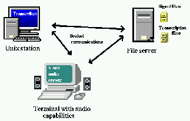
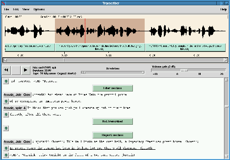

Claude Barras*, Edouard Geoffrois*, Zhibiao Wu** and Mark Liberman**,
"Transcriber: a Free Tool for Segmenting, Labeling and Transcribing
Speech",
proceedings of the First International Conference on Language Resources
& Evaluation (LREC),
pp. 1373-1376, Granada, Spain, May 1998.
*DGA/DCE/CTA/GIP, 16 bis av. Prieur de la Cote d'Or, 94114 Arcueil cedex,
France.
**Linguistic Data Consortium, 3615 Market Street, Suite 200, Philadelphia,
PA, 19104-2608, USA.
{barras,Edouard. Geoffrois}@etca. fr, {wzb,myl}@unagi. cis. upenn. edu
This paper describes the first version of "Transcriber", a tool for segmenting, labeling and transcribing speech. It is developed under Unix in the Tcl/Tk script language with extensions in C, and is available as free software. The environment offers the basic functions necessary for segmenting, labeling and transcribing long duration signals. The signal editor and the text editor are integrated and synchronized in order to display and play the current segment. The output is in a standard SGML format. Multiple languages are supported. The tool can be ported to various platforms and is very flexible so that new functions can be easily added. We hope that such a portable, widely available and flexible tool will benefit the whole community and make it easier to develop and share corpora.
Adapting an existing speech recognition system to a new language or a new task requires training the system on large databases of transcribed speech signals. For example, current efforts in the field of speech recognition at DGA aim at developing a system for transcribing and indexing Broadcast News in French, and the experience on the Broadcast News task in English within the DARPA programs shows that tens of hours of transcribed speech are needed to get good performance.
However, transcribing large amounts of speech requires a suitable software environment. In the case of long duration signals like those used in the Broadcast News task, one must be able not only to type in transcriptions, but also to define segments and label them. This is only possible with an integrated environment with both signal and text editing facilities. At present, few such tools exist and they are not widespread. For example, one has been developed at LDC for internal use. However, it requires a relatively expensive license for third-party speech editing software, and is in other ways not completely portable.
We have therefore developed ``Transcriber'', a transcription tool that is freely available. It offers the basic functions necessary for segmenting, labeling and transcribing long duration signals. The transcription conventions are controlled by format files, and the output is in a standard SGML format. Multiple languages are supported (as in the LDC precursor to this tool, which has been used for transcriptions in Japanese, Mandarin, Arabic in addition to European languages). It is developed under Unix on a PC/Linux with the scripting language Tcl/Tk (Ousterhout, 1994) and C extensions, and it can be easily ported to the Windows platform. A client-server architecture has been chosen for speech file access and for audio playback to allow maximum flexibility, but all components can run on the same computer for a stand-alone usage. Most common audio formats are supported. The tool is very flexible so that new functions can be easily added.
In section 2 we define our requirements for a transcription tool, describe available softwares and explain why we chose to develop a new tool. In section 3, we describe the architecture of the tool, especially the client-server architecture for signal access, and the user interface. We conclude on the perspectives and the possible benefits of such a tool for the speech scientists.
We have defined our needs concerning a tool for the transcription of speech corpora. We have noticed that few existing programs were really adequate, so we decided to develop a new one.
The requirements for the transcription tool were the following:
Concerning the last point and the user interface, we thought it would be particularly important to provide an interactive access of long signals with quick scroll and zoom, and to show a moving cursor on the signal waveform while running playback. This efficiency is often obtained with a low-level control of memory ressources and audio card, at the expense of portability.
Possible solutions were to use an existing transcription tool, to integrate parts of different tools or to develop a completely new tool.
We tried to find in which way existing transcription tools could fit our requirements. LDC has been working for a long time with internally developed tools. These are running on high-end servers or rely on third-party licenses, and are presently not designed to be used on a standard PC. A solution for the MS-Windows platform has been presented at Eurospeech'97 (Akbar, 1997) but it does not seem to be distributed for the moment. A commercial solution exists and has been proposed by Entropics with The Annotator; it makes use of the waves+ module and of Emacs as text editor. But it is quite expensive and cannot be freely modified and redistributed. To summarize, none of these solutions is publicly available, completely free and adapted to our needs.
Another solution is to rely on existing free tools in the field of speech processing and interface them with a text processor. We made some preliminary experiments using Lyre visualization tool from the OGI Toolkit (Schalkwyk et al., 1997). Lyre is written in the scripting language Tcl/Tk which makes an interface with Emacs text editor easy, but Lyre is not efficient for large signals, and it needs to be licensed even if it is free for non-commercial use; furthermore, the lastest version of the Toolkit is distributed for MS Windows only. SFS tools from UCL provide a set of powerful programs for speech processing, including display; but its interface is not very interactive. People from the Spoken Language Systems Group from MIT have described the architecture of their speech analysis and recognition tool SAPPHIRE (Hetherington & McCandless, 1996), which includes graphical tools; the graphical interface is done with Tcl/Tk and specific C extensions and widgets. The design of SAPPHIRE seems very promising even if the tool is not yet publicly available.
We could find part of our requirements in different available software systems. But modifying an existing system is often difficult, and development of new interfaces has become easier with scripting languages like Tcl/Tk. So we decided to start the development of a new transcription tool.
Very recently, Joe Picone from the Institute for Signal and Information Processing announced the public release of a tool designed to (re)segment Switchboard-like corpus of telephonic conversations ; this tool is written in C++ and Tcl/Tk, and its architecture is rather comparable to the one we chose, except our tool is more geared towards Broadcast News-like transcription tasks.
The present version of the tool has been developed in the Tcl/Tk language script with C extensions on a PC/Linux workstation with standard audio capabilities. Linux is a freely available Unix system for standard PC, which is today the most economical solution for a Unix platform. The tool has also been ported to a Sun Solaris environment; this required only a few hours of work. Porting the Transcriber tool to a Windows platform should also be easy, as the Tcl/Tk language exists on this platform. We chose a client-server architecture for audio file access and playback because it allows maximum flexibility. In sections 3.1 we justify and describe this architecture and in section 3.2 we detail the user interface of the tool.
A client-server architecture was chosen both for access to signal files and for audio playback. Audio playback is platform specific and should be clearly isolated from the rest of the tool. Access to files through a server makes it possible to centralize databases and let a remote transcriber have access to them without massive duplication. It is of course possible to have these three parts running on the same computer for a stand-alone usage. The general architecture is illustrated on Figure 1.

Figure 1: Client-server architecture for audio I/O. It is also possible
to work in a stand-alone mode with audio server and file server running
on the local station.
Access to audio signal files is provided through a server controlled with sockets. The complete signal is never transferred to the client, only the needed part is. Concerning the waveform display, the min/max shape is computed on the server at the requested scale, and no more than a few hundred bytes have to be transferred. Furthermore, a low-scale shape can be automatically computed and stored for large signals to avoid reading the complete signal every time a global view of the signal is needed. It is then possible to manage huge signal databases centralized on a server, allowing interactive remote access without duplication of large resources. It is very easy to define a virtual view on a sub-part of a signal, in order to split transcription of several hours of signal into manageable sub-tasks.
The server relies on the libraries of the freely available Sox program for low-level file access, which means that almost all signal formats can be read (Sun ``snd'', PC ``wav'', ...). Compressed formats limit the efficiency, as they forbid direct access to a given portion of the signal. Support for audio files with NIST Sphere format has been added using libraries distributed by NIST (compressed formats can be used for these files).
Audio playback is also provided by a server controlled through sockets. This allows:
So far, the audio functionality has only been tested for the Linux sound driver and for the standard audio playback supported under Solaris. We intend to support the NAS (Network Audio Server) protocol from NCD which has been ported to several platforms.
As an example, we describe the communications between the Client Application (CA), Audio playback Server (AS) and signal File Server (FS) when the user requests audio playback of a segment:
This relatively complex protocol allows an interactive user interface with immediate answer on scrolling and play or pause commands, keeping a platform-independent development simultaneously with efficient memory management and audio card access.
The Transcriber tool consists mainly in two parts:
These two parts are closely interfaced and synchronized in order to display and listen to the current segment: e.g., a single keystroke inside the text editor allows to pause or continue audio playback of the current segment.
The sound viewer makes use of the client-server architecture for file access and audio playback. The temporal shape of sound signals is displayed in a window. Commands allow interactive scrolling inside the signal, and real-time scale modification from a global overview of the signal to a sample-by-sample view. Segments can be added, split or removed with simple mouse manipulations in the signal editor. Any portion of the signal can be selected, zoomed and played, and playback can be paused or restarted with a single keystroke. We found it was important to show the current position in the signal during playback with a moving cursor, because it allows the user to have a better temporal comprehension of the signal. This prevented from launching a completely independent program for playing the sound and was the main motivation for the socket control described in section 3.1.2.
The sound viewer is implemented in Tcl/Tk script with specific widgets written in C for a more efficient display of the waveform at any scale. Some algorithmic optimizations are performed: e.g., only the new part of the signal shape needs to be computed after a scrolling.
Each segment boundary defined in the signal editor appears as a graphical mark in the text editor. Text typed in between too marks belongs to the segment. Each segment can be labeled and have an associated description (speech type or music, speaker identity...). Cursor position between sound viewer and text editor are synchronized, so the local segment can always be easily played. External format for transcriptions follows SGML standard used by LDC. The transcription of the signal is edited locally, but it is possible to let a transcriber work on a part of a signal and register his work on the server at the end of the transcription session.

Figure 2: Screenshot of Transcriber interface
For better interface integration and more rapid development, we chose to use the standard Tk text widget for editing the transcription. Transcription of non European languages will be possible, as Tk manages display of Unicode characters since version 8.1.
Other existing transcription tools rely on the Emacs text editor, which is completely free, widespread, very flexible, and supports internationalization. One might want to allow using Emacs as an alternative text editor for skilled users. Multiple undos, powerful search and replace, multiple buffer management, spell checking... would be better managed with Emacs, and non European languages have long been available with the Mule variant of Emacs. From a technical point of view, programming in Lisp makes it easy to launch sub-processes from Emacs and exchange data with them; however the interface will not be as integrated as with the native Tk text widget.
We have described Transcriber, a tool for segmenting, labeling and transcribing speech. It is still under development but its free distribution will allow other users to add new functionalities.
We hope that such a portable, widely available and flexible tool for annotating speech will benefit the whole community. It can free researchers from developing similar tools in isolation, combining their efforts instead, it can be an incentive to transcribe digital audio for some people who would not do it otherwise, and it can make easier to share corpora created with it.
This document was generated using the LaTeX2HTML translator Version 96.1-h (September 30, 1996) Copyright © 1993, 1994, 1995, 1996, Nikos Drakos, Computer Based Learning Unit, University of Leeds.